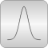
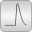

DistributionsLibrary of distribution functions |

|
Package Contents
|
Library of uniform distribution functions |
|
|
Library of normal distribution functions |
|
|
Library of truncated normal distribution functions |
|
|  |
Library of Weibull distribution functions |
|
Library of truncated Weibull distribution functions |
|
|
Library of interfaces for distribution functions |
Information
This information is part of the Modelica Standard Library maintained by the Modelica Association.
This package provides
- probability density functions (= derivative of cumulative distribution function),
- cumulative distribution functions, and
- quantiles (= inverse cumulative distribution functions).
of different distributions.
In particular also truncated distributions are provided (see below). The main reason to introduce truncated distributions is to make the modeling of measurement noise easier, in order to limit the band in which the noise can occur. For example, if a sensor is used and the sensor signal has a noise of ± 0.1 Volt (e.g. this can be determined by using a reference value of 0 V and inspecting the measured signal), then the sensor signal will be often the input to an Analog-Digital converter and this converter limits the signal, say to ± 5 Volt. Typically, the user would like to model noise within the noise band (say ± 0.1 Volt), and often uses a normal distribution. But a normal distribution is not limited and for a small sample time and a long simulation there might be some sample time instants where the noise values of the normal signal is outside the ± 0.1 Volt range. For some sensor types this is completely unrealistic (e.g. an angle sensor might measure ± 0.1 rad, but the sensor will never add, say one revolution (6.28 rad) to it. However, the noise model with a pure normal distribution could give such a value. If a modeler would like to guarantee (and not to hope), that the modeled noise is always between ± 0.1 Volt, then there are two main possibilities: (a) The noise is computed and the result is then limited to ± 0.1 Volt, or (b) the normal distribution is slightly modified, so that it is within the band of ± 0.1 Volt. Approach (a) is a brute force method that changes the statistical properties of the signal in an unknown way. Approach (b) is a "clean" mathematical description. The blocks in package Blocks.Noise give the user the freedom to choose: Either compute a normal (unlimited) noise, or a truncated normal noise (truncated distribution).
Details of truncated distributions
Truncated distributions are distributions that are transformed in such a way that either the input is within a band u_min .. u_max, or the output is within a band y_min .. y_max. A truncated distribution is derived from a base distribution (e.g. from the normal distribution), by truncating its probability density function to the desired band and adding a constant value over this band, in order that the integral over the truncated distribution remains one. All other properties (such as cumulative distribution function) can then be determined in a straightforward way, provided the properties of the underlying base distribution are available. More details can be found, for example, in Wikipedia (the equations from the "Truncated Distribution" box in the right part of this Wikipedia article are used for this package).
When using random numbers according to a given truncated distribution, the output of the inverse cumulative distribution function (= quantile) is restricted to the defined band.
The truncated distribution functions are derived from the underlying distribution functions in the following way:
// Original distributions pdf = Distributions.XXX.density(u,..); cdf = Distributions.XXX.cumulative(u,...); cdf_min = Distributions.XXX.cumulative(u_min,...); cdf_max = Distributions.XXX.cumulative(u_max,...); // Truncated distributions
Function Transformation density(u,u_min,u_max,...) = if u ≥ u_min and u≤u_max then pdf / (cdf_max - cdf_min) else 0 cumulative(u,u_min,u_max,...) = if u ≤ u_min then 0 else if u < u_max then (cdf - cdf_min))/(cdf_max - cdf_min) else 1 quantile(u,u_min,u_max,...) = Distributions.XXX.quantile( cdf_min + u*(cdf_max - cdf_min), ... )
For an example of a truncated distribution, see the following plot of the probability density function of a normal distribution compared with its truncated distribution: